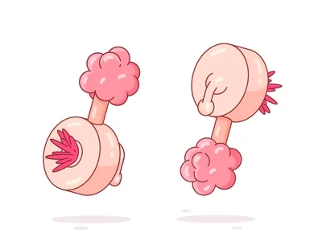

The Humble Plumbus

Fig 1: A Plumbus as seen from the front and back
Ingredients:
- 1 x Dinglebop
- 1 x Schleem bunch (used is fine)
- 1 x Grumbo
- 1 x Fleeb (fresher the better)
Equipment:
- A long rod of some kind
- At least one blaff
- A chisel may make the grumbo removal process easier
- While not technically equipment, a Shlami will need to be present
Steps:
- Smooth out your Dinglebop on a flat surface
- While smoothing the Dinglebop, be sure to sprinkle it with Schleem so that it is pressed into the surface
- Remove the Schleem from the now smoothed Dinglebop
- Using your rod, push the Dinglebop through the Grumbo
- On the other side of the Grumbo, rub the Fleeb against the protruding Dinglebop.
Make sure the Fleeb juices coat the Dinglebop
- Have the Shlami rub then spit on the Dinglebop
- Cut the Fleeb and use the same knife to remove the Hizzards from the front side of the Dinglebop
- Rub your Blaff against the resulting Chumbles until they fall away
- Use your chisel to carve away the Plubus and remaining Grumbo
- Enjoy your fresh new Plumbus!